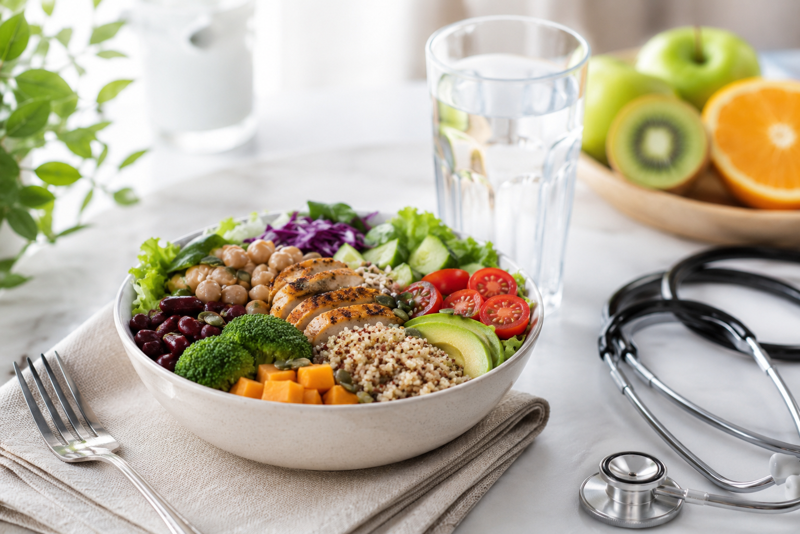

نصائح صحية
5 نصائح ذهبية لصحة قلب أفضل
اتباع نمط حياة صحي يساعد على الوقاية من أمراض القلب ويحسن جودة حياتك اليومية.
اقرأ المزيدنشارككم كل ما هو جديد في عالم الصحة والعلاج.
اتباع نمط حياة صحي يساعد على الوقاية من أمراض القلب ويحسن جودة حياتك اليومية.
اقرأ المزيد
كيف تتابع صحة طفلك عند تغير المواسم؟
اقرأ المزيد


نطور خدمات التحليل لدعم خطة العلاج.
اقرأ المزيد